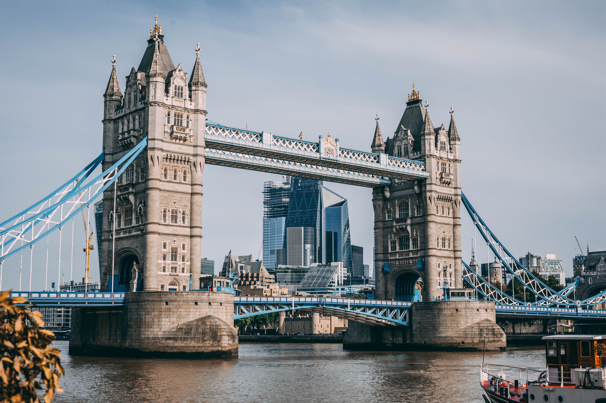

About me:
Niña Kheaney Linares
I am Niña Kheaney Linares. I am turning 26 years old this year. I came from the Philippines
and currently residing in Alkmaar. I have been living here for almost a year. I am quite sad right now
because Autumn is coming and next is winter. I do not particularly like cold weather. I prefer the warmness
I get during summer.
This is my linkedin profile LinkedIn profile



My first out of country vacation was in London. I visited that wonderful place with my friends. It was a very awesome experience and I could not forget when I met the queen and her corgis. They are just so adorable able very funny. I bought lots of souveniers for my family. I paid a total of £200. It was a lot but I am happy that I could give something to my family as a remembrance. The next country that I visited was Paris. The city of love. It is such an amazing country. There are a lot of old buildings and the Eiffel tower is the most iconic. I was having a hard time though becaue I do not know how to speak French. Nonetheless, I was still able to enjoy my visit. I bougt souvenirs again for my family and it costs me a whooping of €500. I could not resit those designer bags and clothes. Lastly, it was an abrupt decision of flying to New York. Since we still have time and money, we decided to just fly to New York and experience the one of the most luxurious cities in the world. Well, I did not forget my family again as I bought more expensive souvenirs for them. I paid a total of $1000. It was the most exensive, but I know they will be happy with it.